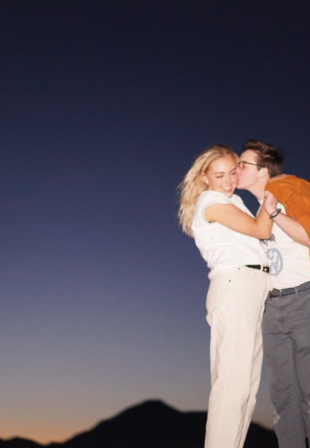
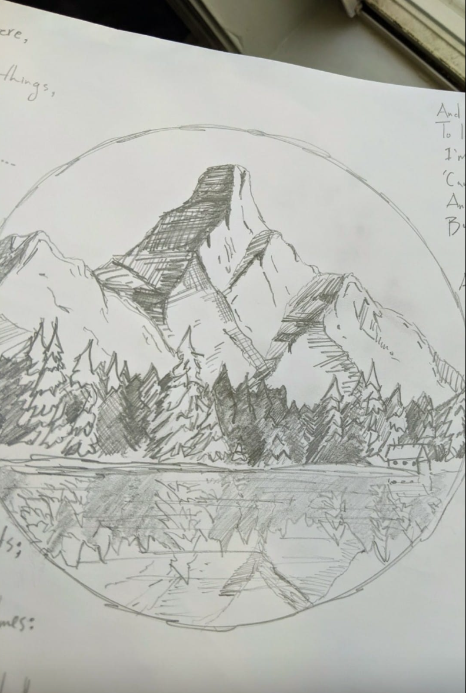
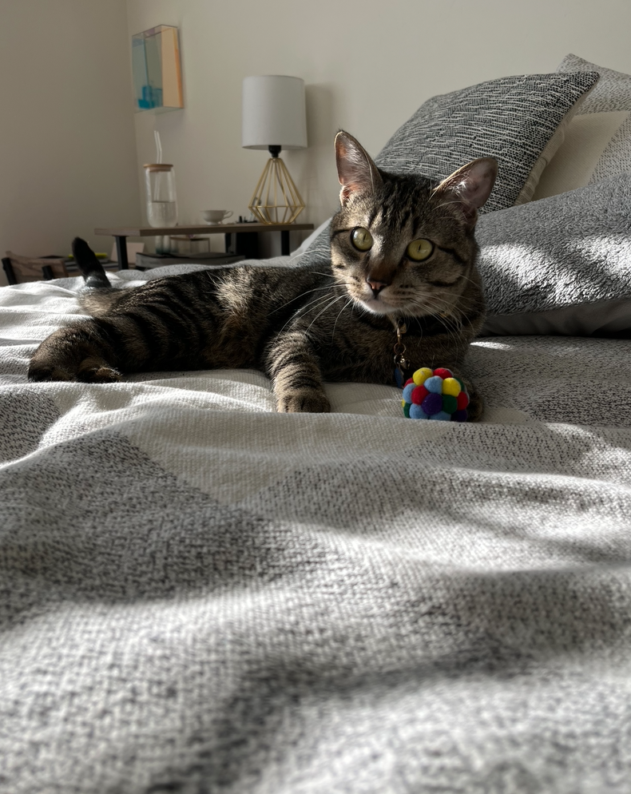
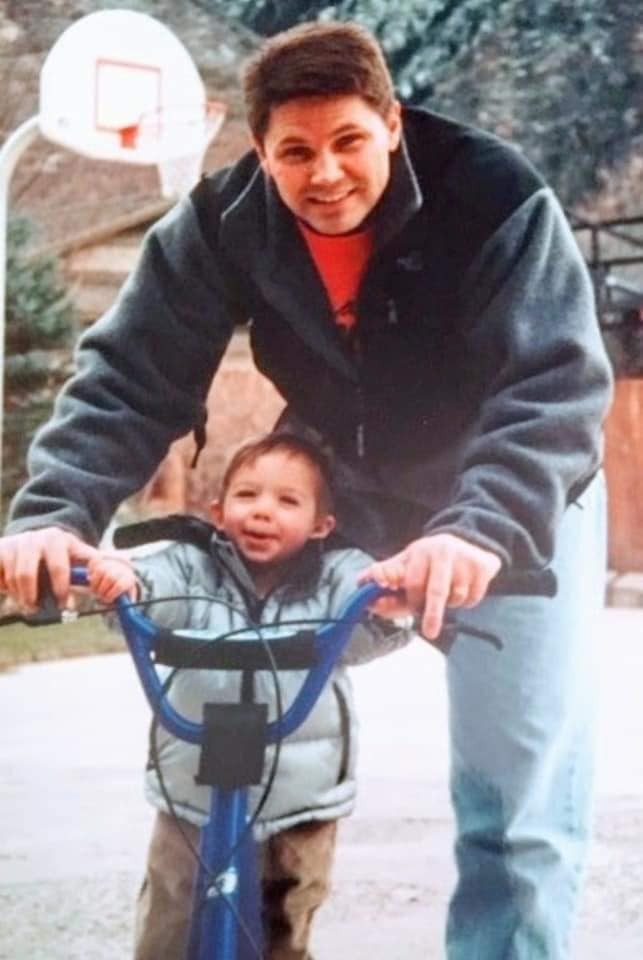
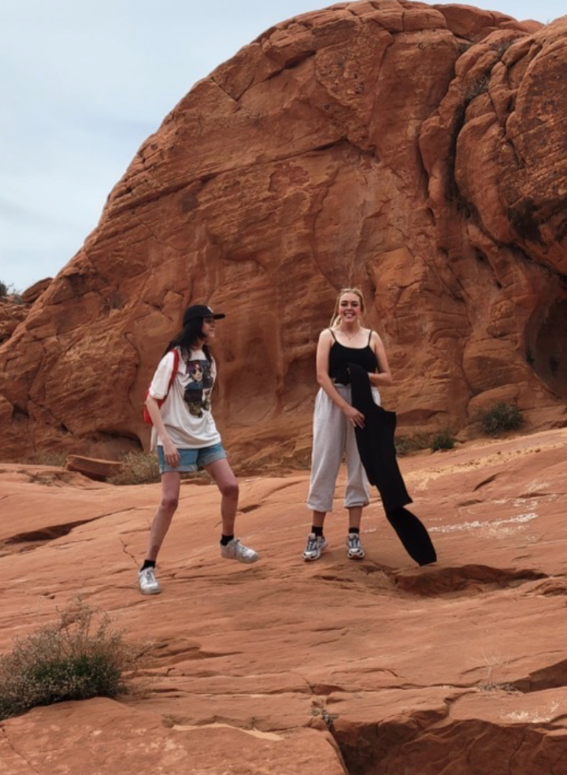
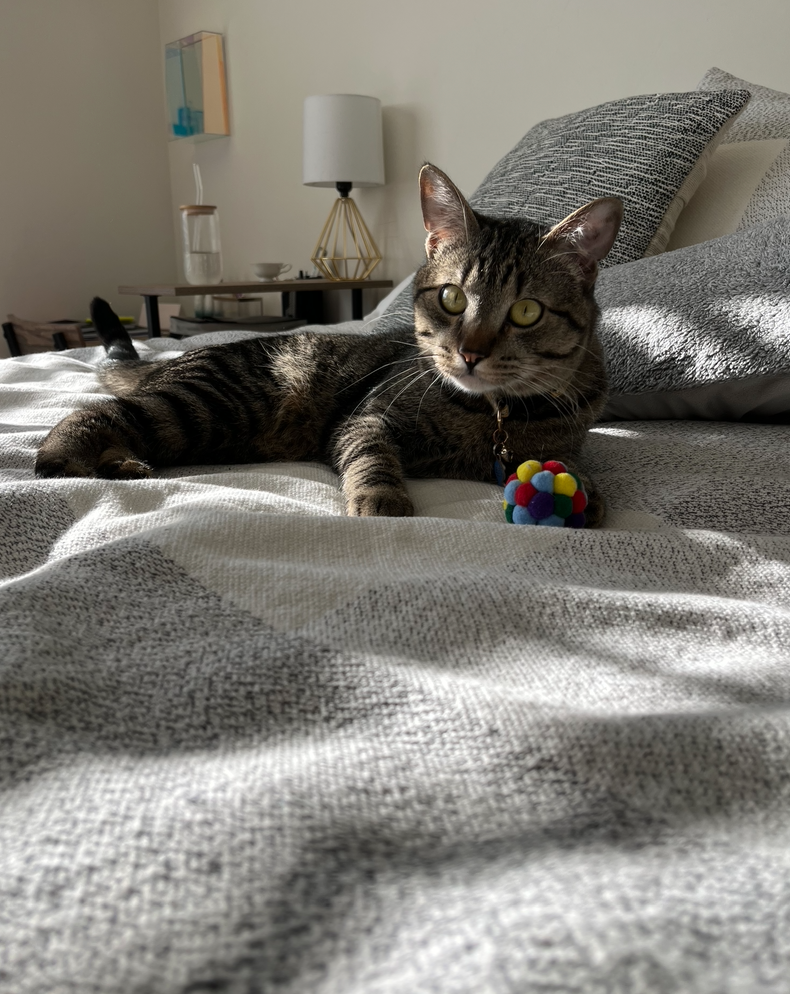
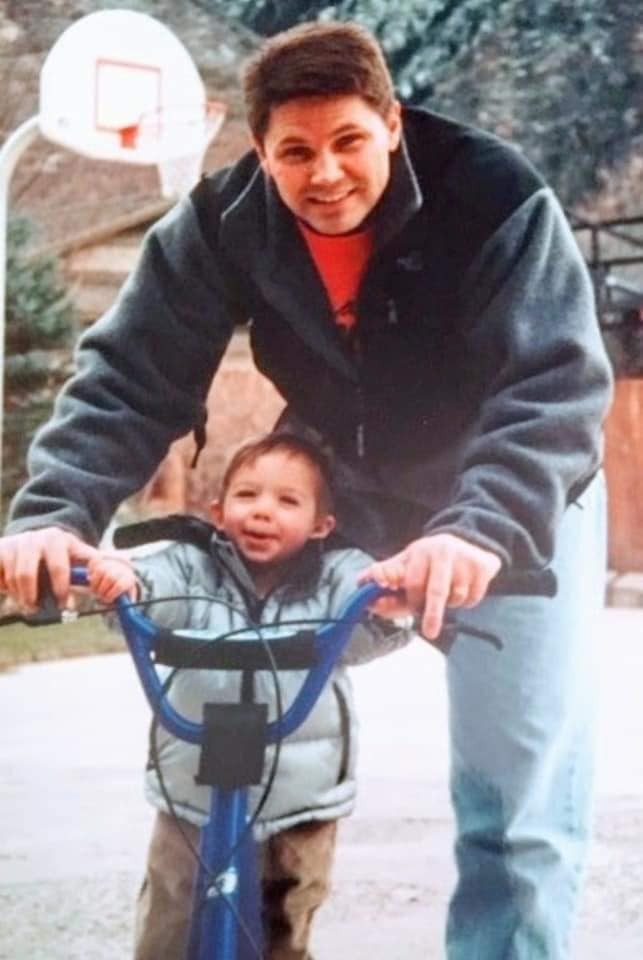
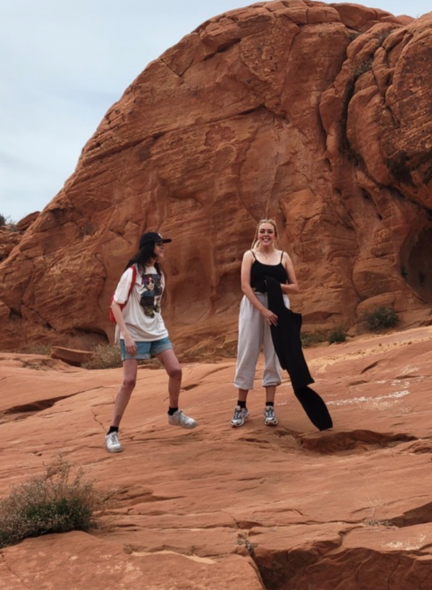

Did you know that it is impossible for most poeple to lick their elbow? Well now you do! Did you know that there has never been a better time to be an accountant? Now you do! These are all very interesting facts... However, what are some interesting things about me? Well, I am the only boy in my family, having 3 older sisters! I grew up playing basketball, tennis, lacrosse, and sometimes soccer. Nowadays, you can catch me in the gym - as I know focus on weightlifting. I've lived in 3 countries (Peru, Argentina, and U.S.), and 4 states (Texas, Utah, Wyoming, and Montana). As such, I love South American culture, and most importantly speaking Spanish with anyone I can. Additionally, I love going on nature escapades! Adventuring anytime I can. I love the arts! I love to sing, draw, and write - primarily poetry. I am a big animal person as well. Growing up, my family always had a dog, sometimes 2 dogs! Nowadays, my lovely wife and I have a cat named "Soup". And trust me, he is just as 'stinky' as a bowl of soup sometimes... Ultimately, the most important part of my life is that I was able to marry the love of my life in Mrs. Casey Grace Douglas. She is the light of my eye, and truly everything I can ask for!
This is my lovely life<3
  





Having lived all over, I have grown a deep love for my surroundings. However, I have yet to visit my favorite place on earth; the Pacific Northwest.
Back to top